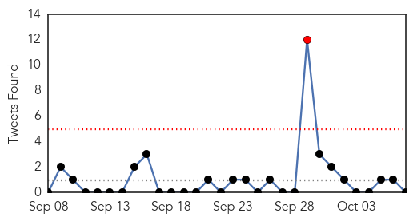
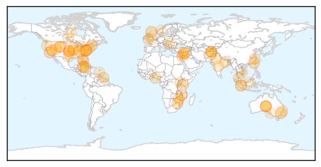

30 Day Trends
Web: 0 alerts, 0 warnings
Twitter: 2 alerts, 0 warnings
Top Articles:
- 0.998
- Getah Virus: Significance as an Equine Pathogen
- 0.995
- Brighton and Hove News Hundreds of young Brighton and Hove schoolchildren offered flu spray at school
- 0.970
- Increase In Reported Cases Of Hand Foot And Mouth Disease
- 0.956
- Annual flu jab campaign
- 0.947
- Health Ministry to continue monitoring schools affected by hand, foot and mouth disease
- 0.922
- Get free flu shots at health department on Friday
- 0.919
- Flu season has arrived in northern Nevada
- 0.917
- Chicago Tribune
- 0.917
- Chicago Tribune
- 0.917
- Chicago Tribune
- 0.917
- Chicago Tribune
- 0.916
- Tackle the flu via drive-thru immunization clinic
- 0.878
- Doctors debate diagnosis of Lyme disease
- 0.857
- Drive to eliminate rabies
- 0.852
- FMD outbreak in Zimbabwe: Botswana on high alert
- 0.849
- Malawi govt given ultimatum to employ 51 recently graduated doctors
- 0.832
- Doctors warn not to wait to get flu shot this year
- 0.821
- Second child sickened by E. coli after Oxford fair visit improves — Health — Bangor Daily News — BDN Maine
- 0.814
- Woman dies of rabies; bat bite blamed for fatality
- 0.804
- Monkey bite increase sparks rabies warning
- 0.791
- Moko threatens Suriname bananas
- 0.790
- Kansas City Seeing An Outbreak Of Diarrhea-Causing Disease
- 0.787
- Eau Claire City-County Health Department holds flu shot clinics
- 0.776
- TB cases were contracted overseas, officials believe
- 0.743
- Wyoming marks first known rabies fatality with death of woman, 77
- 0.730
- Russian incursion into Turkish air space deliberate, NATO says
- 0.728
- We must reduce infant mortality rates
- 0.707
- Israel's Netanyahu cancels Germany trip amid ongoing violence
- 0.705
- Syrian regime launches ground assault backed by Russian air strikes, monitor says
- 0.702
- Russian warships fire cruise missiles into Syria
- 0.702
- Hungarian photographer under fire over ‘migrant chic’ fashion shoot
- 0.699
- Bluetongue disease killing deer in the Northwest;
- 0.696
- Haze makes over 300,000 Indonesians get sick
- 0.693
- Obama calls MSF chief to apologize for Kunduz hospital strike
- 0.692
- Local schools line up for flu vaccinations « Tooele Transcript Bulletin – News in Tooele, Utah
- 0.682
- Campaign art: Fighting neglected tropical diseases one step at a time
- 0.681
- Case of Mad Cow Disease confirmed in Carmarthenshire
- 0.680
- Health concerns over rise in holiday monkey bites
- 0.674
- Chicken and campy: Foodnet Canada 2011-2012
- 0.661
- Feature: Ugandans hail Chinese anti-malarial drug
- 0.661
- Woman at LCC scratched by rabies-infected bat, Lane County health officials report
- 0.656
- Health officials to attend International Summit on Tuberculosis and Diabetes in Bali, Indonesia
- 0.640
- Travel advisory for Chinese province raised after new H7N9 case
- 0.636
- Concern after deadly tree disease discovered in Tayside
- 0.636
- TB Cases Were Contracted Overseas, Officials Believe
- 0.624
- Mathura’s health service in a shambles
- 0.602
- Haj pilgrim may have MERS symptoms
- 0.597
- More Than 730 Illnesses Reported in Latest Salmonella Outbreak
- 0.595
- Fourth Person Dies in Cucumber Salmonella Outbreak
- 0.582
- Kenya enhances malaria response in the wake of El-Nino rains
Showing top 50 articles...
Top Tweets:
- 0.834
- RT: A ver mujeres, el príncipe azul y esas cosas de Disney no existe, si pierdes un zapato en la noche no eres una princesa, s…
- 0.684
- RT: Hoy piensa en ti, en tu vida en lo que has hecho y lo que pretendes hacer de ella, no gastes energías en lo que no vale…
- 0.643
- : Patients with flu-associated pneumonia less likely to have received flu vaccine. Learn more: http://t.co/3tckfnpx3h
- 0.637
- RT: Noticias que quisiéramos leer en Twitter: Inflación venezolana fue de 000,1% y ridiculiza a la de Noruega que alcanzó el …
- 0.623
- People with certain health conditions are at higher risk this flu season. Take steps to prevent flu. http://t.co/K3WOhljHDl
- 0.547
- Tema de Tesis: implicaciones psico-físicas de los apagones de 3 hrs en los venezolanos sinluz
- 0.506
- RT: “Me convertí en un loco con intervalos de horrible cordura.” Edgar Allan Poe Hace 166 años que nos dejo un genio http://t…
Web/News Articles

Tweets
Article Locations
Article Confidences